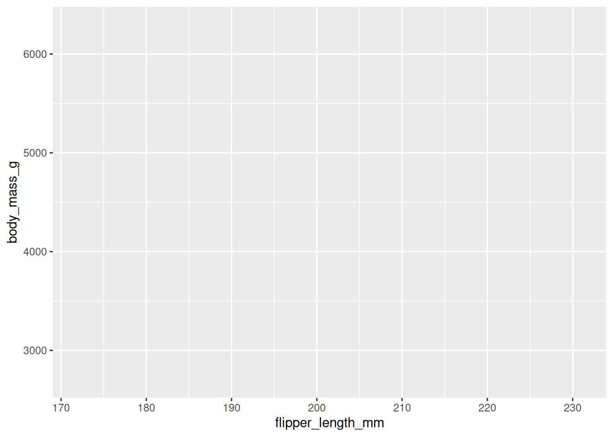

pkg_vec <- c("ggplot2", "palmerpenguins", "ggthemes")
for (x in pkg_vec) {
if (!requireNamespace(x, quietly = TRUE)) {
install.packages(x, dependencies = TRUE)
}
# if you want to programmatically attach
# libraries, this is the way to to do it
library(x, character.only = TRUE)
}10 ggplot2
For an accompanying video, see ggplot2.mp4.
10.1 Motivation
Creating attractive graphics is a crucial part of data analysis. Visualisations help you explore data, identify patterns, and communicate insights to others.
Whilst base R graphics (plot) are useful and fast for simple plots, they have the following drawbacks:
- Documentation is atrocious - it is hard to find what you need.
- It is very fiddly to create complex plots.
For this reason, we will be using ggplot2 for our data visualisation needs. ggplot2 is a powerful and flexible package that allows you to create a wide variety of plots. Due to its popularity, people writing the best visualisation packages for R are almost always writing them in ggplot2, so understanding ggplot2 will make it easier to use other packages.
10.2 Introduction
ggplot2 has an underlying philosophy, the Grammar of Graphics, which is a systematic way of thinking about visualisation.
The content below is a brief summary of the key points in the R4DS introductory chatpter on ggplot2.
In reading the R4DS content, you will come across that term and explanations around it, but in this introduction, I will just refer to the key components of ggplot2 that you need to know to get started.
To run the code below, you will need the ggplot2 (installed by tidyverse), palmerpenguins and ggthemes packages:
ggplot(
data = penguins,
mapping = aes(x = flipper_length_mm, y = body_mass_g)
) +
geom_point(aes(color = species, shape = species)) +
geom_smooth(method = "lm") +
labs(
title = "Body mass and flipper length",
subtitle = "Dimensions for Adelie, Chinstrap, and Gentoo Penguins",
x = "Flipper length (mm)",
y = "Body mass (g)",
color = "Species",
shape = "Species"
) +
scale_color_colorblind()`geom_smooth()` using formula = 'y ~ x'Warning: Removed 2 rows containing non-finite outside the scale range
(`stat_smooth()`).Warning: Removed 2 rows containing missing values or values outside the scale range
(`geom_point()`).- Initial
ggplotcall:- Initialises the plot.
- Parameters:
data:- Specifies the data.
mapping:- Specifies how variables are mapped to the x and y axes.
aes(x = flipper_length_mm, y = body_mass_g)mapsflipper_length_mmto the x-axis andbody_mass_gto the y-axis.- Note that you cannot pass
list(x = ..., y = ...)toaes()or just writex = ..., y = ...directly intoggplot. They must be inside theaes()function.
- Note that you cannot pass
- Parameters set using the initial
ggplotcall are global to the plot, i.e. unless later geoms (geom_point,geom_smooth, etc.) override them, they will apply to all layers.
- The
+operator:- Adds layers to the plot.
- Each
+adds a new layer. - Note that it must come at the end of the line - if you put it at the start of a line,
Rwill think that this line is separate from the previous one, as the previous one will have ended.
geom_point:- Adds points to the plot.
aes(color = species, shape = species)maps thespeciesvariable to both color and shape.- Since the initial
ggplotcall included the mappingaes(x = flipper_length_mm, y = body_mass_g), thegeom_pointcall does not need to repeat this mapping. It will automatically useflipper_length_mmfor the x-axis andbody_mass_gfor the y-axis.
- Adds points to the plot.
geom_smooth:- Adds a best-fit line to the plot.
method = "lm"specifies that the line should be a linear model.method = "loess"would fit a loess curve, which is what your prac2 asks for.
- Like
geom_point, it does not need to specify the mapping since it inherits it from the initialggplotcall.
- Adds a best-fit line to the plot.
labs:- Adds labels to the plot.
title,subtitle,x,yare plot and axis titles.color, andshapeare legend titles.
- Adds labels to the plot.
scale_color_colorblind:- Changes the color palette to a colorblind-friendly one.
To get a feel for what different elements are doing, you can drop them from the plot and see what changes.
10.3 Summary
Below is a concise summary of the key information on ggplot2:
10.3.1 Basic Structure
Initiating a Plot:
Useggplot(data, aes(x, y))to start a plot. This sets up the canvas by specifying the data and how variables are mapped to the x and y axes. Note that without specifying anygeoms (see below), you will not see any content:ggplot(penguins, aes(x = flipper_length_mm, y = body_mass_g))
This does not mean that the above function does nothing, however, as it is specifying the data and the mapping of variables to the x and y axes:
p <- ggplot(penguins, aes(x = flipper_length_mm, y = body_mass_g)) str(p)List of 11 $ data : tibble [344 × 8] (S3: tbl_df/tbl/data.frame) ..$ species : Factor w/ 3 levels "Adelie","Chinstrap",..: 1 1 1 1 1 1 1 1 1 1 ... ..$ island : Factor w/ 3 levels "Biscoe","Dream",..: 3 3 3 3 3 3 3 3 3 3 ... ..$ bill_length_mm : num [1:344] 39.1 39.5 40.3 NA 36.7 39.3 38.9 39.2 34.1 42 ... ..$ bill_depth_mm : num [1:344] 18.7 17.4 18 NA 19.3 20.6 17.8 19.6 18.1 20.2 ... ..$ flipper_length_mm: int [1:344] 181 186 195 NA 193 190 181 195 193 190 ... ..$ body_mass_g : int [1:344] 3750 3800 3250 NA 3450 3650 3625 4675 3475 4250 ... ..$ sex : Factor w/ 2 levels "female","male": 2 1 1 NA 1 2 1 2 NA NA ... ..$ year : int [1:344] 2007 2007 2007 2007 2007 2007 2007 2007 2007 2007 ... $ layers : list() $ scales :Classes 'ScalesList', 'ggproto', 'gg' <ggproto object: Class ScalesList, gg> add: function add_defaults: function add_missing: function backtransform_df: function clone: function find: function get_scales: function has_scale: function input: function map_df: function n: function non_position_scales: function scales: NULL train_df: function transform_df: function super: <ggproto object: Class ScalesList, gg> $ guides :Classes 'Guides', 'ggproto', 'gg' <ggproto object: Class Guides, gg> add: function assemble: function build: function draw: function get_custom: function get_guide: function get_params: function get_position: function guides: NULL merge: function missing: <ggproto object: Class GuideNone, Guide, gg> add_title: function arrange_layout: function assemble_drawing: function available_aes: any build_decor: function build_labels: function build_ticks: function build_title: function draw: function draw_early_exit: function elements: list extract_decor: function extract_key: function extract_params: function get_layer_key: function hashables: list measure_grobs: function merge: function override_elements: function params: list process_layers: function setup_elements: function setup_params: function train: function transform: function super: <ggproto object: Class GuideNone, Guide, gg> package_box: function print: function process_layers: function setup: function subset_guides: function train: function update_params: function super: <ggproto object: Class Guides, gg> $ mapping :List of 2 ..$ x: language ~flipper_length_mm .. ..- attr(*, ".Environment")=<environment: R_GlobalEnv> ..$ y: language ~body_mass_g .. ..- attr(*, ".Environment")=<environment: R_GlobalEnv> ..- attr(*, "class")= chr "uneval" $ theme : list() $ coordinates:Classes 'CoordCartesian', 'Coord', 'ggproto', 'gg' <ggproto object: Class CoordCartesian, Coord, gg> aspect: function backtransform_range: function clip: on default: TRUE distance: function expand: TRUE is_free: function is_linear: function labels: function limits: list modify_scales: function range: function render_axis_h: function render_axis_v: function render_bg: function render_fg: function setup_data: function setup_layout: function setup_panel_guides: function setup_panel_params: function setup_params: function train_panel_guides: function transform: function super: <ggproto object: Class CoordCartesian, Coord, gg> $ facet :Classes 'FacetNull', 'Facet', 'ggproto', 'gg' <ggproto object: Class FacetNull, Facet, gg> compute_layout: function draw_back: function draw_front: function draw_labels: function draw_panels: function finish_data: function init_scales: function map_data: function params: list setup_data: function setup_params: function shrink: TRUE train_scales: function vars: function super: <ggproto object: Class FacetNull, Facet, gg> $ plot_env :<environment: R_GlobalEnv> $ layout :Classes 'Layout', 'ggproto', 'gg' <ggproto object: Class Layout, gg> coord: NULL coord_params: list facet: NULL facet_params: list finish_data: function get_scales: function layout: NULL map_position: function panel_params: NULL panel_scales_x: NULL panel_scales_y: NULL render: function render_labels: function reset_scales: function resolve_label: function setup: function setup_panel_guides: function setup_panel_params: function train_position: function super: <ggproto object: Class Layout, gg> $ labels :List of 2 ..$ x: chr "flipper_length_mm" ..$ y: chr "body_mass_g" - attr(*, "class")= chr [1:2] "gg" "ggplot"
10.3.2 Aesthetic Mappings
Mapping Variables to Visual Properties:
Insideaes(), map variables to aesthetics such as:- Color: Differentiates groups (e.g.,
aes(color = species)). - Shape: Uses different symbols for groups (e.g.,
aes(shape = species)). - Size: Can reflect magnitude differences.
ggplot(penguins, aes(x = flipper_length_mm, y = body_mass_g)) + geom_point(aes(color = species, shape = species))Warning: Removed 2 rows containing missing values or values outside the scale range (`geom_point()`).
- Color: Differentiates groups (e.g.,
10.3.3 Geometric Objects (Geoms)
Different Plot Types:
Add layers to your plot using geoms. Common examples include:- Scatterplots:
geom_point() - Smooth Lines:
geom_smooth()(e.g., for adding a best-fit line) - Bar Charts:
geom_bar()orgeom_col() - Histograms and Density Plots:
geom_histogram(),geom_density()
ggplot(penguins, aes(x = flipper_length_mm, y = body_mass_g)) + geom_point(aes(color = species, shape = species)) + geom_smooth(method = "lm")`geom_smooth()` using formula = 'y ~ x'Warning: Removed 2 rows containing non-finite outside the scale range (`stat_smooth()`).Warning: Removed 2 rows containing missing values or values outside the scale range (`geom_point()`).
- Scatterplots:
10.3.4 Layering and Customization
Adding Layers:
Combine multiple geoms to add detail to your plot. Layers are added using the+operator.Custom Labels and Themes:
Enhance your plot with titles, axis labels, and legends usinglabs()and adjust appearance with theme functions.ggplot(penguins, aes(x = flipper_length_mm, y = body_mass_g)) + geom_point(aes(color = species, shape = species)) + geom_smooth(method = "lm") + labs( title = "Body mass and flipper length", subtitle = "Dimensions for Adelie, Chinstrap, and Gentoo Penguins", x = "Flipper length (mm)", y = "Body mass (g)", color = "Species", shape = "Species" ) + scale_color_colorblind()
10.3.5 Faceting
Splitting Data into Panels:
Use faceting (withfacet_wrap()orfacet_grid()) to create subplots based on a categorical variable, making it easier to compare groups.ggplot(penguins, aes(x = flipper_length_mm, y = body_mass_g)) + geom_point(aes(color = species, shape = species)) + facet_wrap(~ island)Warning: Removed 2 rows containing missing values or values outside the scale range (`geom_point()`).
10.3.6 Saving Your Plots
Exporting Graphics:
Useggsave()to save the most recent plot to a file (e.g., PNG, PDF).ggsave("penguin-plot.png")